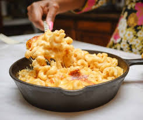

Tomato-Based Sauces
Authentic Italian Spaghetti
DESCRIPTION: A recipe that comes straight from Italy. Tomatoes, basil, onions, and carrots flavor the meat to make the perfect sauce!
INGREDIENTS:
- 1 tablespoon olive oil
- 1 small onion finely chopped
- 3 carrots peeled, chopped
- 1 pound ground beef
- 1/2 pound ground pork (optional)
- 1 1/2 pounds tomatoes
- 6 fresh basil leaves chopped (or 1-2 teaspoons dried basil)
- 1/2 teaspoon sugar
- 1 teaspoon Kosher salt
- 1/2 teaspoon pepper
- 1 pound spaghetti noodles
INSTRUCTIONS:
Step 1: Heat oil on medium heat in a large, deep skillet. Add onion, carrots, and garlic and sauté for 1 minute. Add ground beef and pork and continue to cook.
Step 2: When meat is browned and onions are soft, add tomatoes.
Step 3: When tomatoes have softened and have started to release their juices, add basil, sugar, salt, and pepper. Cook for 20-30 minutes on low heat.
Step 4: While the sauce is cooking, bring a large pot of salted water to a boil. Cook the spaghetti noodles according to the package instructions.
Classic Lasagna
DESCRIPTION: A baked casserole made with wide flat pasta and layered with fillings such as ragú, bechamel, vegetables and various cheeses.
INGREDIENTS:
- 350 g lasagna pasta sheets
- 1 tsp. extra-virgin olive oil, plus more for drizzling
- 450 g beef mince
- 2 cloves garlic, crushed
- 1 tsp. dried oregano
- Salt
- Freshly ground black pepper
- 900 g ready-made tomato pasta sauce
- 450 g ricotta
- 50 g freshly grated Parmesan
- 1 tbsp. chopped parsley, plus more for garnish
- 700 g mozzarella, sliced
INSTRUCTIONS:
Step 1: Preheat oven to 190ºC (170ºC fan). In a large pot of salted boiling water, cook pasta according to package directions until al dente, less 2 minutes. Drain and drizzle a bit of olive oil to prevent the sheets from sticking together.
Step 2: Meanwhile, in a large pot over medium-high heat, heat oil. Cook beef until no longer pink, breaking up with a wooden spoon, then drain fat. Return beef to pan and add garlic and oregano and stir for 1 minute. Season with salt and pepper, then add tomato sauce and stir until warmed through.
Step 3: Combine ricotta, 25g Parmesan, and parsley in a large mixing bowl and season with salt and pepper. Set aside.
Step 4: In a large casserole dish, spread a thin layer of meat sauce, a single layer of lasagne pasta sheets, a layer of ricotta mixture, and a single layer of mozzarella, then repeat layers. Top last layer of sheets with meat sauce, Parmesan, and mozzarella.
Step 5: Cover with foil and bake for 15 minutes, then increase temperature to 200ºC and bake uncovered for 18 to 20 minutes.
Step 6: Garnish with parsley and serve.
Penne Ala Vodka
DESCRIPTION: Made primarily with vodka and penne pasta, usually accompanied with heavy cream, crushed tomatoes or tomato sauce, onions, and sometimes small meats and vegetables like sausage, pancetta or peas.
INGREDIENTS:
- 3 tbsp. butterl
- 1 shallot, crushed
- 2 cloves garlic, crushed
- 115 g tomato paste
- 1/2 tsp. crushed chilli flakes
- 2 tbsp. vodka
- Salt
- 450 g tubed pasta
- 120 ml double cream
- 50 g freshly grated Parmesan
- Basil
INSTRUCTIONS:
Step 1: In a large pan over medium heat, melt butter. Add shallot and garlic and cook, stirring frequently, until softened, 4 to 5 minutes.
Step 2: Add tomato paste and chilli flakes and cook, stirring frequently, until paste has coated shallots and garlic and is beginning to darken, 5 minutes
Step 3: Add vodka to pot and stir to incorporate, scraping up any browned bits from the bottom of the pot. Turn off heat.
Step 4: Bring a large pot of salted water to a boil and cook pasta until al dente. Reserve 480ml of pasta water before draining.
Step 5: Return sauce to medium heat and add 60ml of pasta water and double cream, stirring to combine. Add half the Parmesan and stir until melted. Turn off heat and stir in cooked pasta. Fold in remaining Parmesan, adding more pasta water gradually. Season with salt if needed.
Step 6: Serve topped with more Parmesan and torn basil leaves.
Cream-Based Sauces
Creamy white fettucine alfredo
DESCRIPTION:Made with Parmesan cheese, butter, some warm pasta cooking water, and salt.
INGREDIENTS:
- 2 teaspoons olive oil
- 2 large garlic cloves, thinly sliced
- ⅛ teaspoon crushed red pepper, plus more for garnish
- 2 (15-oz.) cans cannellini beans, drained
- 1 ½ cups vegetable broth
- ½ cup nutritional yeast
- ¼ teaspoon lemon zest plus 1 Tbsp. fresh juice
- ½ teaspoon kosher salt
- 16 ounces uncooked fettucine noodles
- 3 ounces baby spinach
- Chopped fresh flat-leaf parsley
INSTRUCTIONS:
Step 1: Heat oil in a large skillet over medium-high. Add garlic and crushed red pepper; cook, stirring often, until fragrant, about 1 minute. Stir in beans, broth, yeast, lemon zest and juice, and salt. Bring to a boil, and remove from heat. Pour bean mixture into a blender. Secure lid to blender, and remove center piece to allow steam to escape. Place a clean towel over opening. Process until smooth. Transfer bean mixture back to skillet.
Step 2: Bring a large pot of salted water to a boil over high. Add fettucine to water, and boil, stirring often, until al dente, about 10 minutes. Drain, reserving 1 to 1 1/2 cups cooking water. Add pasta to skillet with bean mixture; toss to coat, adding reserved cooking water as needed to thin sauce. Add spinach; cook, stirring until just wilted, about 2 minutes
Step 3: Divide pasta among 4 bowls. Sprinkle with parsley and red pepper.
Creamy four cheese pasta with spinach
DESCRIPTION: A creamy pasta that has a taste of the four cheese toppings which are the mozzarella, gorgonzola, Parmigiano Reggiano, and goat cheese, and a touch of spinach.
INGREDIENTS:
- 8 ounces uncooked quinoa or chickpea pasta (such as rigatoni, penne, farfalle, or rotini)
- 1 tablespoon olive oil
- 8 cups baby spinach
- 1 tablespoon chopped garlic
- 2 ounces fontina cheese, shredded (about 1/2 cup)
- ½ cup low-fat ricotta cheese
- 1 ounce 1/3-less-fat cream cheese, softened
- ¼ teaspoon kosher saltv
- ⅛ teaspoon cayenne pepper
- ¼ cup finely grated Parmesan cheese
INSTRUCTIONS:
Step 1: Prepare pasta in a large stockpot according to package directions, omitting salt and fat. Drain pasta, reserving 1/4 cup cooking liquid. Return pasta and reserved cooking liquid to stockpot.
Step 2: Heat oil in a large saucepan over medium-high. Add spinach and garlic; cook, stirring often, until spinach wilts and garlic is slightly softened, about 3 minutes. Add fontina, ricotta, and cream cheese; cook, stirring constantly, until cheeses melt and mixture is creamy, about 30 seconds. Immediately remove from heat; add to pasta in stockpot. Add salt and cayenne. Stir gently to coat pasta with sauce.
Step 3: Top with Parmesan. Serve immediately.

Baked mac and cheese
DESCRIPTION: Macaroni pasta mixed with different types of cheeses.
INGREDIENTS:
- 1 lb. dried elbow pasta
- 1/2 cup unsalted butter
- 1/2 cup all purpose flour
- 1 1/2 cups whole milk
- 2 1/2 cups half and half
- 4 cups shredded medium sharp cheddar cheese divided
- 2 cups shredded Gruyere cheese divided
- 1/2 Tbsp. salt
- 1/2 tsp. black pepper
- 1/4 tsp. paprika
INSTRUCTIONS:
Step 1: Preheat oven to 325 degrees F and grease a 3 qt baking dish (9x13"). Set aside.
Step 2: Bring a large pot of salted water to a boil. When boiling, add dried pasta and cook 1 minute less than the package directs for al dente. Drain and drizzle with a little bit of olive oil to keep from sticking.
Step 3: While water is coming up to a boil, shred cheeses and toss together to mix, then divide into three piles. Approximately 3 cups for the sauce, 1 1/2 cups for the inner layer, and 1 1/2 cups for the topping.
Step 4: Melt butter in a large saucepan over MED heat. Sprinkle in flour and whisk to combine. Mixture will look like very wet sand. Cook for approximately 1 minute, whisking often. Slowly pour in about 2 cups or so of the half and half, while whisking constantly, until smooth. Slowly pour in the remaining half and half and the whole milk, while whisking constantly, until combined and smooth.
Step 5: Remove from the heat and stir in spices and 1 1/2 cups of the cheeses, stirring to melt and combine. Stir in another 1 1/2 cups of cheese, and stir until completely melted and smooth.
Step 6: In a large mixing bowl, combine drained pasta with cheese sauce, stirring to combine fully. Pour half of the pasta mixture into the prepared baking dish. Top with 1 1/2 cups of shredded cheeses, then top that with the remaining pasta mixture.
Step 7: Sprinkle the top with the last 1 1/2 cups of cheese and bake for 15 minutes, until cheesy is bubbly and lightly golden brown.